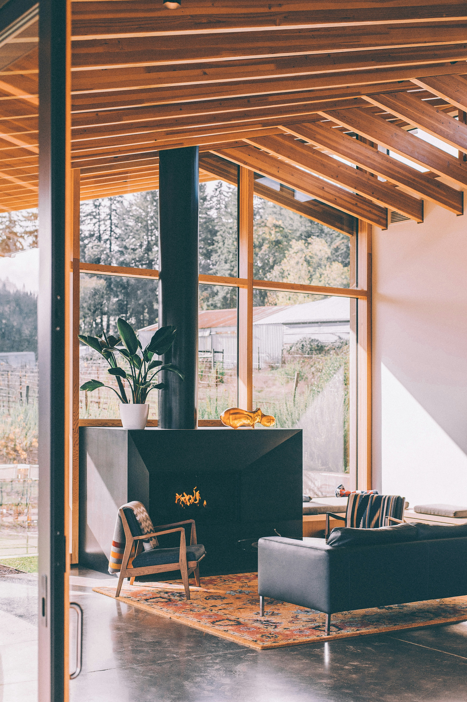

Description
Les bonnes décisions d'aménagement se prennent avec les bonnes informations.
Transformer un intérieur ne s'improvise pas. Entre les contraintes techniques, les règles urbanistiques et la multitude de choix à arbitrer, un projet d'aménagement engage rapidement des décisions importantes — et parfois irréversibles.
Qu'il s'agisse d'optimiser l'agencement de vos meubles, de repenser la circulation, d'ouvrir un espace ou d'engager des travaux plus conséquents, j'analyse votre logement dans sa globalité : potentiel de transformation, contraintes structurelles, conformité réglementaire. Nous échangeons sur vos usages, votre mode de vie et vos objectifs pour définir ensemble des solutions concrètes, réalistes et adaptées.
Un accompagnement en amont par un architecte vous permet de sécuriser vos décisions, d'éviter des erreurs coûteuses et d'aborder votre projet avec sérénité.
Un projet d'aménagement engage plus de paramètres qu'il n'y paraît. Derrière les choix visibles, se cachent des enjeux structurels, urbanistiques et réglementaires que l'on ne perçoit pas toujours. Mal anticipés, ils peuvent transformer un projet réussi en situation problématique, souvent sans que le propriétaire en ait conscience.
Deux exemples courants : ouvrir la cuisine sur le séjour en perçant un mur porteur nécessite une autorisation urbanistique préalable. Transformer une pièce en chambre implique de respecter des critères précis de surface et d'éclairage naturel — sans quoi elle ne peut légalement être louée ou vendue comme telle.
Les conséquences peuvent être significatives : une transaction immobilière bloquée, des travaux complémentaires ou une remise en état imposés, une responsabilité engagée. Ce sont des situations évitables — à condition d'avoir posé les bonnes questions au bon moment.
Intégrer un architecte dès la phase de réflexion, c'est s'assurer que ces enjeux soient traités en amont. Le résultat est un projet mieux cadré, plus serein à conduire, et conçu pour durer.
Un regard d'architecte sur votre projet, directement chez vous.
Une séance de deux à trois heures à domicile pour identifier le potentiel de votre intérieur, cerner les contraintes et obtenir des orientations claires et actionnables. À l'issue de la visite, vous disposez de toutes les informations pour poursuivre votre projet en autonomie.
Ce qui est inclus
Une base technique fiable pour engager votre projet.
Disposer d'un relevé précis est indispensable pour mener son projet de transformation dans des conditions optimales. Cette option vous fournit les plans cotés et détaillés des pièces concernées par votre projet. Une fondation solide pour la suite de votre réflexion ou de votre chantier.
Ce qui est inclus
Vos réflexions traduites en pistes concrètes d'aménagement.
Cette option donne une forme tangible à vos envies et à vos contraintes. Les idées échangées lors de la visite-conseil sont formalisées dans un document remis après la séance. Vous disposez d'un support concret pour guider vos prises de décision et nourrir la suite de votre projet.
Ce qui est inclus